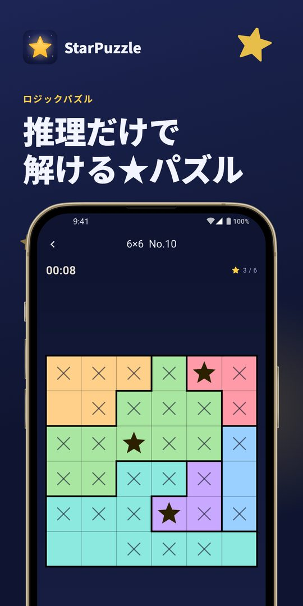
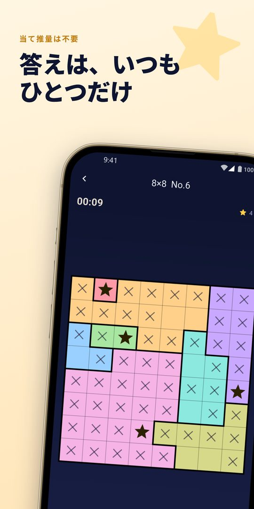
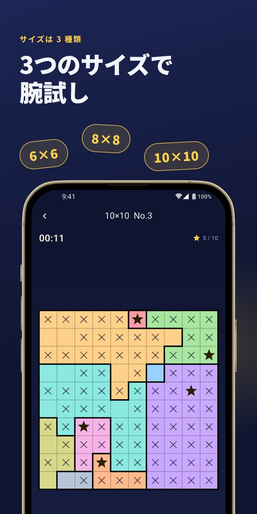
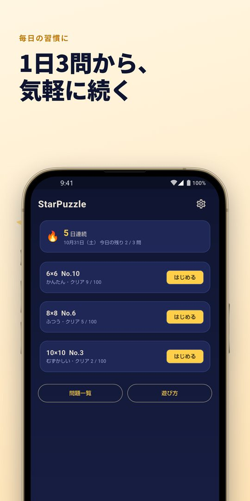
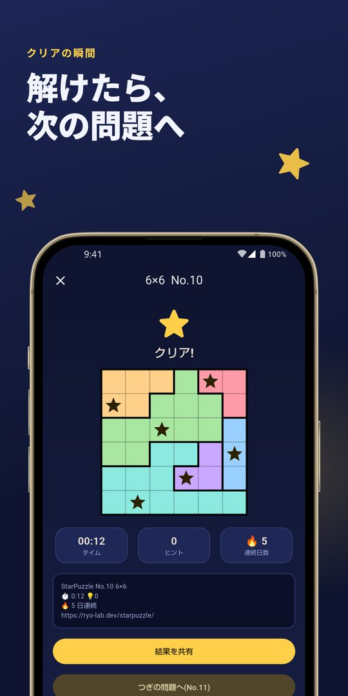
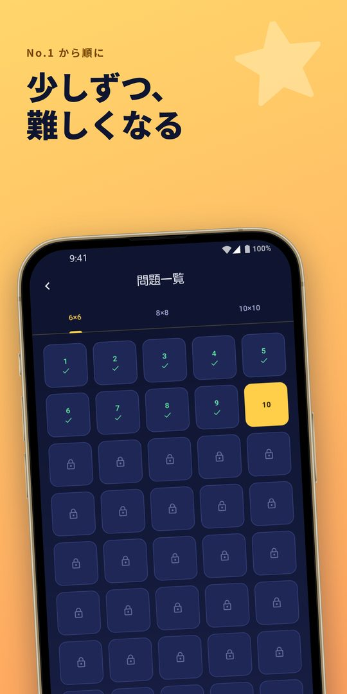

推理だけで解ける★パズル
各行・各列・各色の領域に★を 1 つずつ。No.1 から順に、1 日 3 問から気軽に遊べる一人用のロジックパズルです。
Rules
盤面は、色分けされた N 個の領域に分かれています。次の条件をすべて満たすように、★を N 個置きます。
マスをタップすると「空 → × → ★ → 空」と切り替わります。★が置けない場所に × を付けて絞り込んでいくのがコツです。ルールに反する★は赤く表示されます。
Features
答えは必ず 1 通りで、当て推量が要らない問題だけを収録しています。「ここしか置けない」を積み重ねていけば、最後まで解けます。
6×6・8×8・10×10 の 3 サイズに、各 100 問（合計 300 問）を収録。どのサイズも No.1 から順に、少しずつ難しくなります。
無料で遊べるのは 1 日 3 問まで（日本時間の 0 時に戻ります）。使い切っても、広告を最後まで見ると 3 問ずつ追加できます。途中のもの・クリア済みの問題は、枠を使わずに遊べます。
詰まったときは、広告を見るとヒントを 1 回使えます（正しい★を 1 つ置きます。見なくても問題は解けます）。元に戻す・全消去・途中で閉じても続きから再開できます。
領域は色分けに加えて、境目を太線で表示。色の区別がつきにくい方でも見分けやすくしています。★を置いたら自動で × を付ける設定や、振動のオン・オフもできます。
クリアした日が続いた日数を表示します。クリア画面から、タイムや連続日数を文字で共有できます。
Screenshots
← スワイプまたはスクロールで確認できます






Story
個人で開発しています。ロジックパズルは好きでも、「最後は勘で試すしかない問題」に当たると、がっかりします。そこで、すべての問題を「推理だけで最後まで解けること」を確かめたうえで収録しました。
アカウントの登録は要りません。記録は端末の中にだけ保存し、サーバーには送りません（利用状況・クラッシュ情報・広告のための通信を除きます。詳しくはプライバシーポリシーをご覧ください）。
こんな方に使っていただけたら嬉しいです。
FAQ